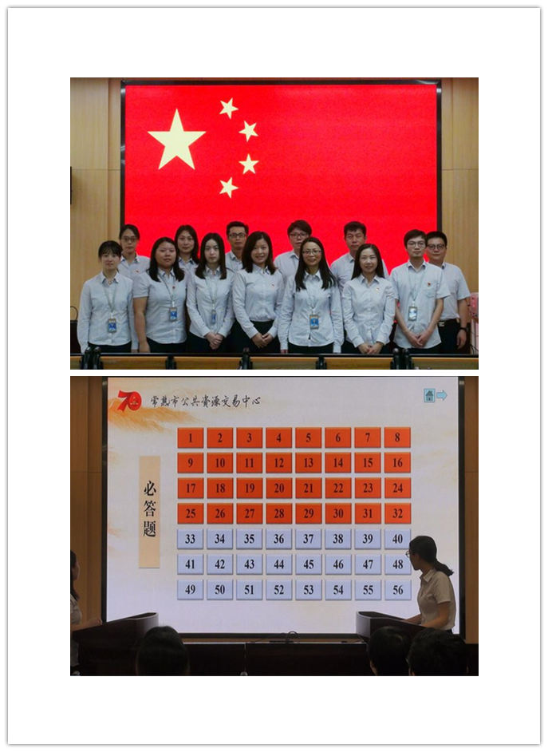
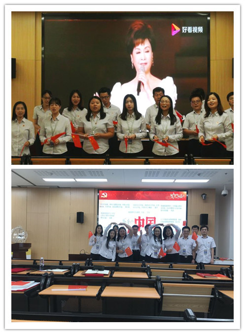

【信息发布时间：2019-09-29阅读次数：】 【我要打印】 【关闭】
今年是新中国成立70周年，为祝福祖国，传承爱国之情，在国庆前夕，支部结合“不忘初心，牢记使命”主题教育活动，开展了“我与国旗同框，真情祝福祖国”主题党日活动。

活动在紧张激烈的“学习强国”知识挑战赛中拉开了序幕。支部12名党员分四组，采用两两“PK”的形式进行比赛。经过必答题和自选题两个环节的焦灼比拼，最终，由姚从菊、邹琦、石曦组成的1号参赛队获得了第一名。随后，全体人员手持红旗，面带微笑，深情合唱《我和我的祖国》，用歌声表达对祖国的祝福。每位党员还轮流深情告白祖国，为新中国70华诞送上最诚挚的祝福。“祝祖国日益强大！”“祖国明天会更好！”“祝祖国繁荣昌盛，人民幸福安康！”“祖国！我为你骄傲！我为你自豪！”等等，一句句朴实无华的话语饱含着对祖国的热爱和深厚的情感。最后，大家齐声高喊“中国！我爱你！”，并与鲜艳的五星红旗合影。活动中还欣赏了支部党员表演的诗朗诵《我骄傲，我是中国人！》。

本次活动内容丰富，亮点纷呈，全体党员积极参加，极大的激发了大家的爱国主义情怀。